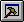

Home Vocabulary: Hosting Words
File load/edit
| FLOAD | ( <filename> -- ) | Loads a Forth source file. |
| INCLUDE | ( <filename> -- ) | Includes a Forth source file. Same as FLOAD. |
| NEEDS | ( <filename> -- ) | FLOADs a file if it hasn't been loaded yet. |
| OK | ( -- ) | FLOADs the current file (named in the title bar). |
| BROWSE | or B ( <filename> -- ) | Opens WinView with a file in Browse mode. |
| EDIT | or E ( <filename> -- ) | Opens WinView with a file in Edit mode. |
Mode Selection
| HOST | or F7 or ( -- ) | Enters the host's Forth mode. |
| BUILDING | or BI or  ( -- ) | Enters the ROM builder mode. |
| TOKENIZING | or TI ( -- ) | Enters the tokenizer mode. |
| TESTING | or TE ( -- ) | Enters testing mode. For interactive testing of target words. |
| FORTHING | or FI or ( -- ) | Enters the interactive Forth mode. |
Search Order
| ONLY | ( -- ) | Clears the search order so it only contains the HOME wordlist. |
| ALSO | ( -- ) | Duplicates the top of the search order. |
| PREVIOUS | ( -- ) | Drops the top vocabulary in the search order. |
| DEFINITIONS | ( -- ) | Makes the top vocabulary of the search order the current vocabulary. |
| VOCABULARY | ( <name> -- ) | Creates a word that replaces the top of the search order with its own vocabulary. |
| HOMEORDER | ( -- ) | Makes the HOME wordlist the only one in the search order and directs host definitions to the HOME wordlist. |
| ORDER | ( -- ) | Displays the current search order on the console. |
| UNDERALSO | ( -- ) | Duplicates the second wordlist in the search order. |
| UNDERDEFS | ( -- ) | Makes the second wordlist of the search order the current wordlist. |
| UNDERPREVIOUS | ( -- ) | Removes the second wordlist in the search order. |
| WORDS | ( -- ) | Displays all words in the vocabulary at the top of the search order. |
| (WORDS) | ( -- ) | Lists words at the very top of the search order. For example: when in BUILDING mode, you can use (WORDS) to list the builder lexicon. |
| HOME | ( -- ) | Places the HOME wordlist at the top of the search order. |
| FORTH | ( -- ) | Places the FORTH wordlist at the top of the search order. Rarely used. |